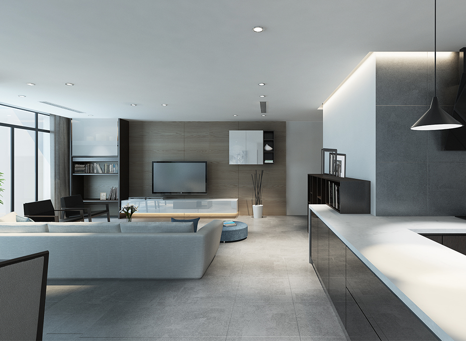

Title Text
The LC14 stool designed by Le Corbusier made design History thanks to its simplicity and cleverness. MIRAGE was inspired by this iconic no non-sense piece. The transparency of this easily moved around (2,5 kg) punched-aluminium structure plays with the notions of Empty and Full. Creating a sense of weightlessness and a light visual impression, when its three possible seat heights allow the seat to follow its user in infinite real-life configurations.The Mirage is fit for in and outdoor contract uses. And while standing tall on its own, is also perfect for grouped combinations where its translucence avoid the feeling of clutter in the room.